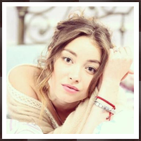
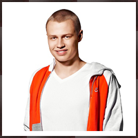

|  |  | |||
| | | |||
Вратарь. Честный, добрый, отзывчивый и искренний. Семён один из лучших вратарей в МХЛ. Очень любит свою семью и жену Риту. Ему покровительствует Вячеслав Фетисов. Роль исполняет: Игорь Огурцов |  | Елена полностью отдается профессии и считает, что журналист имеет право высказывать свои мысли, нравится это кому-то или нет. Роль исполняет: Анастасия Стежко | |||
Тафгай, ещё один «взрослый» игрок «Бурых медведей». Защитник бойцовского типа — неразговорчивый, крепкий парень, любитель побоксировать на льду и не только. Кличка в команде — Буш. Роль исполняет: Тимур Ефременков | Мажор и бабник, живет на широкую ногу, производя впечатление крутого парня. Вскоре после прихода в команду Васильев решает приударить за дочерью тренера-словака. Роль исполняет: Никита Еленев | ||||
Нападающий, бывший капитан «Электрона». Младший брат Виталия Жданова, доверенного лица губернатора. Подчеркивает свой особый «неприкасаемый» статус не только среди игроков, но и в отношениях с тренерами. Роль исполняет: Владимир Яглыч | Новая пассия Руслана. Главный мужчина в её жизни — её байк, и все попытки Руслана сблизиться терпят фиаско.Владелица цветочных салонов. Роль исполняет: Иева Андреевайте | ||||
Крайний нападающий. Андрей – сын прокурора города. Однажды, Андрей осознал, что расположение любимой девушки можно только заслужить. Долго добиваясь сначала взаимности Яны, а потом её руки и сердца Андрей наконец-то услышал заветное «да». Роль исполняет: Влад Канопка | Бывший вратарь ХК «Медведи». Разрываясь между учёбой и спортом, Дима играл в хоккей не столь увлеченно, как его старший брат Егор Щукин, но при этом он был очень способным вратарём. Роль исполняет: Макар Запорожский | ||||
Крайний нападающий. Хоккей для него не просто увлечение — это страсть. Ради хоккея Саша был готов пожертвовать учёбой в престижном ВУЗЕ. Скромный и тихий парень. Роль исполняет: Иван Жвакин | Врач команды «Титан». Привлекательная молодая женщина с неженским характером. Замужем, но брак на грани распада (узнала об измене мужа, пытается развестись, муж не отпускает, в скандалах поднимает на неё руку). Роль исполняет: Светлана Антонова | ||||
В своё время Макеев был игроком команды НХЛ. Вернувшись в Россию стал тренировать ХК «Медведи». Вместе с ним команда добилась небывалого успеха. Женат на Юлии Макеевой, вместе с которой воспитывает двоих детей. Роль исполняет: Денис Никифоров |  | Уверенная в себе, яркая, активная, эффектная. Марина капитан группы поддержки ХК «Бурые медведи». Встречается с бывшим капитаном ХК «Медведи» Егором Щукиным. Их отношения складывались непросто из-за ветрености Марины. Роль исполняет: Юлия Маргулис | |||
Самый взрослый игрок «Бурых медведей», впоследствии второй тренер команды. Раньше играл за известные клубы и неплохо зарабатывал, но из-за семейных проблем «выбыл из профессии» и вернулся уже в команду ВХЛ. Разведен, имеет 17-летнюю дочь Машу. Роль исполняет: Сергей Горобченко | Оля — жена Антона Антипова.Пресс-секретарь "Медведей".Парадокс ещё заключается в том, что они - сводные брат и сестра, хотя и не являются биологическими родственниками. Воспитывает дочь по имени Тоня. Роль исполняет: Мария Пирогова | ||||
Дочь Бориса Никитина. Из-за постоянных ссор с матерью сбегает к отцу. Но мать грозит посадить Никитина в тюрьму, если дочь не вернется домой. Маша уступает матери, но в день своего совершеннолетия снова уезжает жить к папе. Роль исполняет: Анастасия Уколова |  | Мать Саши Кострова. Ольга Владимировна желает для своего сына только лучшего, поэтому пытается оградить его от всего что только можно. Ему покровительствует Вячеслав Фетисов. Роль исполняет: Ксения Лаврова-Глинка | |||
Новый, молодой хоккеист. «Звездочка» КХЛ, которого в качестве наказания за постоянные нарушения дисциплины отправляют в клуб ВХЛ. В силу возраста и успеха считает себя лучше всех, задирист. Роль исполняет: Евгений Романцов | Увлекается современным искусством, предпочитает классическую музыку. Девушка Саши Кострова, бывшая девушка Жени Царёва. Роль исполняет: Мария Ахметзянова | ||||
Защитник. Миша вырос в неблагополучной семье, поэтому для него хоккей стал реальным шансом выбиться в люди. Несмотря на все трудности, Мише удалось обрести счастье – он женился на Алине Морозовой. Роль исполняет: Илья Коробко | Симпатичный, немногословный парень, с трудным характером и со своим скелетом в шкафу. Он вызывает активный интерес у противоположного пола, но сторонится молоденьких поклонниц, которые пытаются с ним познакомиться. Роль исполняет: Михаил Гаврилов | ||||
Егор был капитаном ХК «Медведи», но профессиональная травма стала для него началом тренерской карьеры. Несмотря на то, что его любимая – Марина, однажды его предала, Егор нашёл в себе силы простить девушку. Роль исполняет: Александр Соколовский | Рита — жена Семёна Бакина. Ждет рождения сына, помогает и поддерживает мужа. Ему покровительствует Вячеслав Фетисов. Роль исполняет: Наталья Терешкова | ||||
|  | Крайний нападающий. Принципиальный, вспыльчивый, волевой. Антон сын Юли Макеевой и, соответственно, пасынок Макеева. Старается не смешивать личное и профессиональное, но это дается ему с большим трудом. Женат на Оле Беловой, вместе пара воспитывает ребенка. Роль исполняет: Иван Мулин |  | Жена Сергея Макеева. Мать Антона Антипова. Работает фармацевтом в аптеке. Семья Макеевых усыновила воспитанника детского дома – Пашу. В третьем сезоне Юля и Сергей завели еще одного ребёнка. Роль исполняет: Серафима Низовская | ||
 | |||||